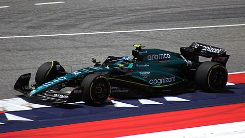

Aston Martin es un fabricante de coches británico que ha participado en la Fórmula 1 de diversas maneras. La compañía participó por primera vez durante la temporada 1959 con el monoplaza DBR4, usando su propio motor, pero sin obtener puntos. Continuaron con malos resultados en la temporada 1960 nuevamente sin obtener puntos. Como resultado, Aston Martin decidió abandonar la Fórmula 1.
Un cambio de marca del Racing Point F1 Team resultó en el regreso a la Fórmula 1 como Aston Martin en 2021, utilizando motores de Mercedes. La escudería, propiedad de Lawrence Stroll, tiene a Fernando Alonso y Lance Stroll como sus pilotos de carreras en la temporada 2023 con el monoplaza AMR23. La escudería tiene sede en Silverstone.
Historia
El debut en Fórmula 1 sucedió luego de buenos resultados de la automotriz en carreras de deportivos, incluyendo una victoria en las 24 Horas de Le Mans. Ocurrió en el Gran Premio de los Países Bajos de 1959, con dos Aston Martin DBR4 del equipo de nombre David Brown Corporation. Esa temporada reiteraron participación en Gran Bretaña, Portugal e Italia. Roy Salvadori obtuvo los mejores resultados del equipo en el campeonato, dos sextos lugares, además de un podio en un GP no puntuable.
Al año siguiente solo se inscribieron en dos Grandes Premios, Países Bajos y Gran Bretaña. Este último fue su última carrera en Fórmula 1, siendo, además, la única participación del monoplaza DBR5.
Siglo XXI
Tras algunos problemas económicos de Force India Formula One Team en 2015, comenzaron a estudiar la posibilidad de asociarse con otra marca para mejorar sus ingresos y resultados. A pesar del importante ingreso económico que recibió por parte de Sergio Pérez y el multimillonario Carlos Slim en patrocinadores, según se hizo público, Vijay Mallya, director del equipo, solicitó un adelanto de dinero de premios a Ecclestone. Ante la negativa, a partir del verano europeo, el equipo indio confirmó que sus intenciones eran competir como Aston Martin, mejorando así el desarrollo del monoplaza y recibiendo un mayor interés de los patrocinadores por el marketing de la marca británica.
Por otro lado, tras algunos años de rumores en los que se acercó a la marca británica a la máxima categoría, en 2015 reconocieron las negociaciones para su retorno. En primera instancia, el vínculo fue con Red Bull, ya que la escudería austriaca amenazó con abandonar el campeonato. Pero en el segundo semestre del año, las negociaciones con Force India tomaron estado público y Vijay Mallya admitió que el acuerdo sería muy beneficioso porque atraería a nuevos patrocinadores. Finalmente los acuerdos cayeron a principios del año posterior.
Por otro lado, en 2018, la compañía se asoció con Red Bull Racing como principal patrocinador del equipo. Este contrato hizo que el logotipo de Aston Martin apareciera en gran parte de los monoplazas de ese año y del siguiente y que el nombre de la escudería fuese «Aston Martin Red Bull Racing»
Después de diversas conversaciones que se tuvieron con el equipo Red Bull Racing para adquirir dicho equipo sin buen puerto y después de numerosos rumores sobre su posible asociación con el consorcio Racing Point UK, se confirmó que la temporada 2021 marcaría el regreso de la empresa automotriz como equipo de Fórmula 1, tras una ausencia de más de 60 años, dando finalizada su asociación como patrocinio con Red Bull Racing a final de temporada. El billonario canadiense Lawrence Stroll invirtió en Aston Martin 182 millones de libras esterlinas, lo cual le proporcionó el 20 % de las acciones del fabricante, y decidió usar la imagen de Aston Martin para convertir a partir de 2021 al equipo Racing Point en Aston Martin F1 Team. Sebastian Vettel fue el primer piloto titular confirmado, y luego fue anunciado Lance Stroll, hijo de Lawrence Stroll.
Aston Martin obtuvo su primer podio en Fórmula 1 en el Gran Premio de Azerbaiyán de esa temporada, de la mano de Vettel.
En agosto de 2022, Aston Martin confirmó como piloto al español Fernando Alonso, para la temporada 2023.
El 5 de marzo, en el primer Gran Premio de la temporada 2023 en Baréin, Fernando Alonso logró el segundo podio de la historia para Aston Martin, al ubicarse en la tercera posición. En las dos siguientes carreras, el español finalizó en la misma colocación.
24 de mayo de 2023 la escudería anunció un acuerdo con Honda mediante el cual la marca japonesa se convertirá en socio y proveedor oficial de los motores en 2026.